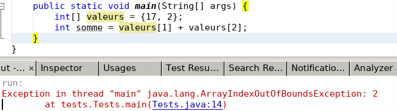

TP Gestion des fichiers
Lors cette séance vous allez découvrir comment manipuler les fichiers en Java.
Ce TP constitue la suite du TP précédent : reprenez le projet NetBeans de la semaine dernière et continuez dessus.
Introduction
Fichiers physiques et logiques
En Java, comme dans la plupart des langages, nous faisons la différence entre :
- les fichiers physiques désignés par leur nom (et leur chemin) sur le système de fichiers, donnés par une chaîne de caractères. Par exemple "/etc/hostname" ou "C:\Temp\test.txt".
- les fichiers logiques (parfois appelés descripteurs, flux, ...). Il s'agit d'objets permettant de manipuler les fichiers dans le langage de programmation : les ouvrir, fermer, lire, écrire, etc. Par exemple un objet FileReader pour lire un fichier. On peut alors utiliser des variables pour manipuler les fichiers.
FileReader monFichier = new FileReader("/home/identifiant/unfichier.txt");
crée un objet "monFichier" de type FileReader (fichier logique) qui ouvre
le fichier physique "/home/identifiant/unfichier.txt"
et permet ensuite d'en lire le contenu via
monFichier.read().
Cela dit, cette dernière méthode ne fait que lire, caractère par caractère, et sans buffer. Il existe en Java d'autres classes permettant par exemple de lire ligne par ligne, avec buffer (pour optimiser les accès à la mémoire), etc. C'est ce que nous verrons dans la Question 1.
Gestion des exceptions
La manipulation des fichiers donne lieu à beaucoup de problèmes potentiels d'accès au fichier : lire un fichier absent ou protégé, créer un fichier dans un dossier inexistant, etc.
Java introduit un mécanisme pour gérer les erreurs à l’exécution : les exceptions. Les exceptions servent à détecter une erreur à l'exécution, pas forcément liée à la manipulation des fichiers.
Ainsi vous avez certainement déjà croisé certaines exceptions, par exemple lorsque vous tentez d'accéder à une case d'un tableau à une position incorrecte (en dehors des bornes, "out of bounds") : ArrayIndexOutOfBoundsException. 
Une exception est levée (throw) lorsqu'un problème est détecté. Elle peut être levée par Java, ou par votre propre code (vous verrez comment au S2). Dans l'exemple ArrayIndexOutOfBoundsException ci-dessus, l'exception a été levée par Java (au moment de l'évaluation de valeurs[2]) et a fait planter le programme : il est stoppé avec comme message d'erreur la pile d'appel (stacktrace) qui a mené à l'exception.
Il est possible de rattraper (catch) une exception, pour éviter de stopper le programme, en traitant les cas d'erreurs détectés par les exceptions. Cela se fait par l'intermédiaire d'un try/catch :
// simple illustration du try/catch
int[] valeurs = {17, 2};
try {
int somme = valeurs[1] + valeurs[2]; // levée de l'exception
} catch (ArrayIndexOutOfBoundsException e) {
System.out.println("Exception rattrapée : " + e); // rattrapage
}
// le programme continue ensuite
Dans ce code, l'évaluation de valeurs[2]
va lever une exception de type ArrayIndexOutOfBoundsException.
Comme elle se trouve dans un bloc try,
et qu'un bloc catch pour ce type d'exception existe,
le programme entre dans ce catch, et
le message suivant est affiché :
Exception rattrapée : java.lang.ArrayIndexOutOfBoundsException: Index 2 out of bounds for length 2Notez que l'exception est elle-même un objet, accessible via la variable "e", et de type ArrayIndexOutOfBoundsException (c'est une classe). Dans tous les cas, le programme continue ensuite après le bloc try/catch.
Ici le try/catch n'a pas d'intérêt puisqu'il s'agit d'un bug à corriger. Par contre, pour la gestion des fichiers, il deviendra essentiel, et nous verrons des formes plus élaborées de try/catch dans ce cas.
 Les exceptions sont levées à l'exécution
(lorsqu'un problème intervient), pas à la compilation.
C'est tout leur intérêt. Les exceptions sont levées par
la JVM (java) alors que les erreurs de compilation sont levées
par le compilateur (javac).
Les exceptions sont levées à l'exécution
(lorsqu'un problème intervient), pas à la compilation.
C'est tout leur intérêt. Les exceptions sont levées par
la JVM (java) alors que les erreurs de compilation sont levées
par le compilateur (javac).
Écrire dans un fichier
Comme pour Unix (et donc Linux), lire/écrire dans un fichier n'est pas très différent de lire/écrire dans un terminal. En Java, il y a plusieurs façons de faire, et nous vous présentons dans ce TP des classes et méthodes assez "haut niveau", qui masquent les aspects très techniques.
Pour écrire dans un fichier, nous utiliserons la classe PrintWriter. Celle-ci possède notamment :
- un constructeur prenant directement le nom du fichier en paramètre,
- des méthodes print() et println() pour écrire dans le fichier (similaires aux mêmes méthodes de System.out),
- une méthode format() similaire à celle de String vue la semaine dernière, pour écrire de manière formatée,
- une méthode flush() qui écrit le buffer sur le disque. En effet, Java utilise, en mémoire vive, une copie du fichier, appellée "buffer" pour y appliquer les opérations de lecture/écriture plus rapidement. Lorsque ces opérations sont terminées (fermeture du fichier), ce buffer écrase réellement l'ancien fichier sur le disque. Ceci peut être forcé via l'opération flush(), sans fermer le fichier.
- une méthode close() qui permet de fermer le fichier. Cette opération est indispensable avant de quitter le programme, pour que les modifications soient réellement sauvegardées sur le disque.
// version simpliste, sans gestion des exceptions
PrintWriter fichier = new PrintWriter("test.txt");
fichier.println("Ligne 1");
fichier.println("Ligne 2");
fichier.close();
Mais ce code ne gère pas les exceptions.
Pour ce faire, il y a 2 méthodes en Java :
-
le try-with-resources
est la manière moderne, disponible depuis Java 8.
Elle permet de gérer la fermeture des ressources (fichiers...)
automatiquement, qu'une exception ait été levée ou non.
// version "try-with-resources" (meilleure manière) try (PrintWriter fichier = new PrintWriter("test.txt")) { fichier.println("Ligne 1"); fichier.println("Ligne 2"); } catch (FileNotFoundException e) { System.out.println("Exception rattrapée : " + e); }La syntaxe est :try (/* déclaration des ressources (fichiers...) */) { // utilisation des ressources (lecture, écriture...) } catch (FirstException e1) { // traitement des exceptions de type FirstException } catch (SecondException e2) { // traitement des exceptions de type SecondException }On peut déclarer plusieurs ressources dans le même try en les séparant par des points-virgules. Les ressources sont fermées automatiquement à la sortie du try/catch. -
le try/catch/finally,
qui fonctionne comme le try/catch,
avec un bloc finally supplémentaire,
qui s'exécute dans tous les cas (que l'on passe dans un catch
ou non).
// version "try/catch/finally" (moins élégante) PrintWriter fichier = null; try { fichier = new PrintWriter("test.txt"); fichier.println("Ligne 1"); fichier.println("Ligne 2"); } catch (FileNotFoundException e) { System.out.println("Exception rattrapée : " + e); } finally { if (fichier != null) { fichier.close(); } }
Remarque : il y a d'autres manières que PrintWriter pour écrire dans un fichier, par exemple via les classes FileWriter et BufferedWriter qui sont plus "bas niveau".
1. Fichier de logs du serveur
Pour l'instant les logs du serveur sont uniquement affichées dans la console, via la méthode log() de la classe Serveur. Nous allons également écrire ces logs dans un fichier. Ces logs seront vidées à chaque démarrage du serveur.
Pour cela, dans la classe Serveur :
- au tout début du main(), initialisez l'attribut logfile, en utilisant le nom de fichier stocké dans la constante LOG_FILENAME. Utilisez un try/catch simple (sans finally, ni try-with-resources) car le fichier doit rester ouvert tant que le serveur tourne.
- dans la méthode log(), écrivez dans le fichier logfile de la même manière que ce qui est fait dans la console (conservez l'écriture dans System.out). Faîtes aussi un flush(), car le serveur est en général fermé via Ctrl+C donc sans fermer le fichier.
- compilez, relancez le serveur, et vérifiez que le fichier jump.log est créé et contient les logs.
- commentez le flush() et réessayez : il y a de fortes chances pour que votre fichier soit vide. Décommentez le flush().
2. Sauvegarder la partie en cours
La sérialisation d'une variable consiste à obtenir une description de sa valeur (ici, sous la forme d'une chaîne de caractères), qui contienne toutes les informations de l'objet. Ainsi, on peut reconstruire l'objet à partir de sa sérialisation.
Nous allons utiliser ce principe pour sauvegarder la partie en cours. Pour sérialiser une partie, il faut donc décrire tous ses attributs : le tour de jeu, le nombre de joueurs, les informations de chaque joueur (nom, points, colonne, etc), le plateau, etc. Il faut donc aussi sérialiser tous ces éléments. Les classes Partie, Plateau, Joueur et l'énumération StatutJoueur disposent toutes d'une méthode serialiser() dans ce but.
- codez la méthode serialiser() de la classe Joueur, en renvoyant une chaîne contenant les informations suivantes, chacune suivie d'un caractère séparateur (donné dans SEPARATEUR) : le nom, la colonne, le score, et le statut (utiliser la méthode serialiser() de StatutJoueur dans ce cas). Le test testSerialiser de la classe JoueurTest doit passer.
- codez la méthode sauvegarder() de la classe Partie : vous devez simplement écrire dans le fichier FICHIER_SAUVEGARDE le résultat de serialiser().
- testez dans le jeu : lancez une partie, démarrez-la, et lancez la sauvegarde. Vérifier que le fichier indiqué dans FICHIER_SAUVEGARDE a été créé et contient la sérialisation de la partie.
3. Sauvegarder les scores : le mode rajout
Nous allons maintenant sauvegarder les scores, à chaque fin de partie. Pour l'instant nous sauvegarderons tous les scores de toutes les parties dans un même fichier.
Cela implique d'ajouter des informations dans un fichier, alors que jusqu'ici nous écrasions tout. La classe PrintWriter ne le permet pas directement, donc nous utilisons un FileWriter pour ouvrir le fichier en mode rajout, et construisons ensuite un PrintWriter à partir de celui-ci :
try (
FileWriter fileWriter = new FileWriter("/chemin/vers/fichier", true);
PrintWriter fichier = new PrintWriter(fileWriter);
) {
fichier.println("ligne ajoutée en fin de fichier");
} catch (FileNotFoundException ex) {
Serveur.log(TypeLog.ERREUR, "Ouverture du fichier impossible : " + ex);
} catch (IOException ex) {
Serveur.log(TypeLog.ERREUR, "Erreur d'écriture : " + ex);
}
C'est le booléen true dans le constructeur de FileWriter
qui indique le mode "rajout" (append).
- codez la méthode ligneFichierScore() de la classe Joueur. Celle-ci renvoie la ligne qui sera écrite dans le fichier de score pour le joueur. Cette ligne doit contenir le nom du joueur, puis Joueur.SEPARATEUR, puis le score du joueur. Le test testLigneFichierScore() de la classe JoueurTest doit passer.
- codez la méthode sauverScores() de la classe Partie. Cette méthode doit ouvrir le fichier dont le nom est stocké dans FICHIER_SCORES en mode rajout, et, pour chaque joueur de la partie, écrire sur une ligne le résultat de ligneFichierScore(). Vérifiez que les scores sont bien ajoutés dans le fichier.
Lire un fichier
Là aussi, en Java, il y a plusieurs façons de lire un fichier. Nous allons utiliser la classe Scanner, qui sert, de manière générale, à découper une chaîne de caractères en fonction d'un séparateur (spécifié par la méthode useDelimiter()) et à en retourner les éléments l'un après l'autre, via les méthodes
On peut ainsi utiliser un Scanner pour :- découper une chaîne de type String
Scanner scanner = new Scanner("Bordeaux,105.2,102.4"); scanner.useDelimiter(","); while (scanner.hasNext()) { String mot = scanner.next(); // ... } - lire dans un fichier
(on utilise alors hasNextLine() et
nextLine() pour lire ligne par ligne)
try (Scanner scanner = new Scanner(new File("/chemin/vers/fichier"))) { while (scanner.hasNextLine()) { String ligne = scanner.nextLine(); // ... } } catch (FileNotFoundException ex) { System.out.println("Fichier non trouvé : " + ex); } - lire depuis le clavier (voir dans Client par exemple)
Scanner scanner = new Scanner(System.in); String nomJoueur; do { nomJoueur = scanner.next(); } while (!correct(nomJoueur));
Enfin, à la place de Scanner, on aurait pu utiliser des méthodes plus "bas niveau" pour lire un fichier, via les classes FileReader et BufferedReader, par exemple. Dans ce cas, ne pas oublier de fermer le fichier (méthode close()) à la fin de son utilisation.
4. Charger une partie sauvegardée
Nous allons maintenant implémenter la restauration d'une partie sauvegardée.
- dans la classe Partie, lisez le code de la méthode restaurer()
- dans cette même classe, lisez le code de la méthode deserialiser()
- codez la méthode deserialiser() de la classe Joueur. Utilisez pour cela un Scanner pour lire la sérialisation du joueur passée en paramètre. Pensez à utiliser Joueur.SEPARATEUR comme séparateur. Créez un nouveau joueur et affectez-lui les attributs récupérés depuis la sérialisation. L'ordre des éléments lus est le même que dans serialiser().
- le test testDeserialiser() de la classe JoueurTest doit passer.
- pourquoi les méthodes deserialiser() sont-elles des méthodes de classe (static) ?
Exercices facultatifs
Meilleurs scores
On souhaite, à chaque fin de partie, vérifier si certains scores sont parmi les 10 meilleurs, les insérer, et afficher ces 10 meilleurs scores.
- dans Partie, modifiez la méthode sauverScore() dans ce sens, lui faire renvoyer le tableau des meilleurs scores sous forme de chaîne, et envoyer cette chaîne aux clients après l'appel à partie.sauverScore() dans Serveur.
- gérez le cas des ex-aequo : dans ce cas les joueurs doivent avoir le même classement.
Vérifier l'intégrité d'un fichier de sauvegarde
Écrire une méthode vérifiant que le fichier de sauvegarde est correct :
- tous les champs sont présents,
- le nombre de joueurs correspond au nombre de joueurs listés,
- les dimensions du plateau sont cohérentes avec sa largeur et sa hauteur,
- tous les joueurs encore en jeu sont présents sur le plateau, et uniquement ceux-là,
- le score des joueurs est cohérent avec le nombre de tours.
Vérifier qu'il existe un chemin sur le plateau
Écrire une méthode qui vérifie qu'un chemin existe pour chacun des joueurs en jeu, jusqu'à l'extrémité droite du plateau.
Powered by w3.css